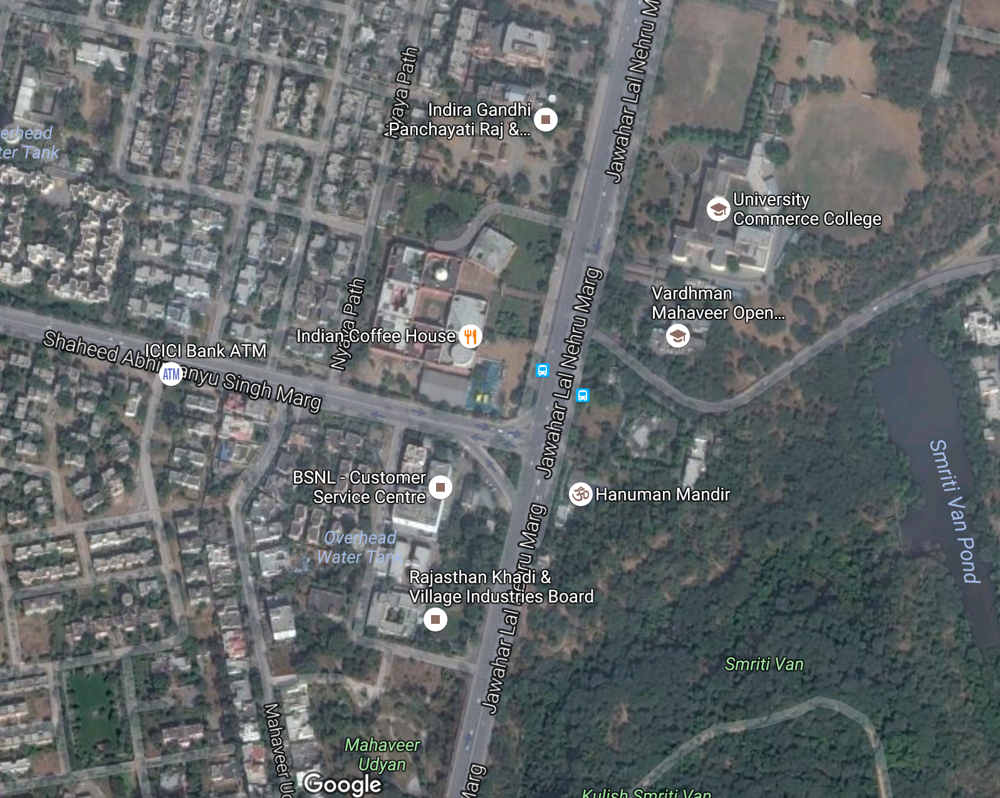

Q
Find building on Google Earth and comment on its surroundings−for starters, is it in a city or in an open field? Include a screenshot.
A
The JKK stands on the border between the sprawl of Jaipur and a park that extends out into the surrounding country-side. These surroundings mean it can be part of the bustling city while still being removed enough to let visitors escape into the arts they experience there.

Screenshot